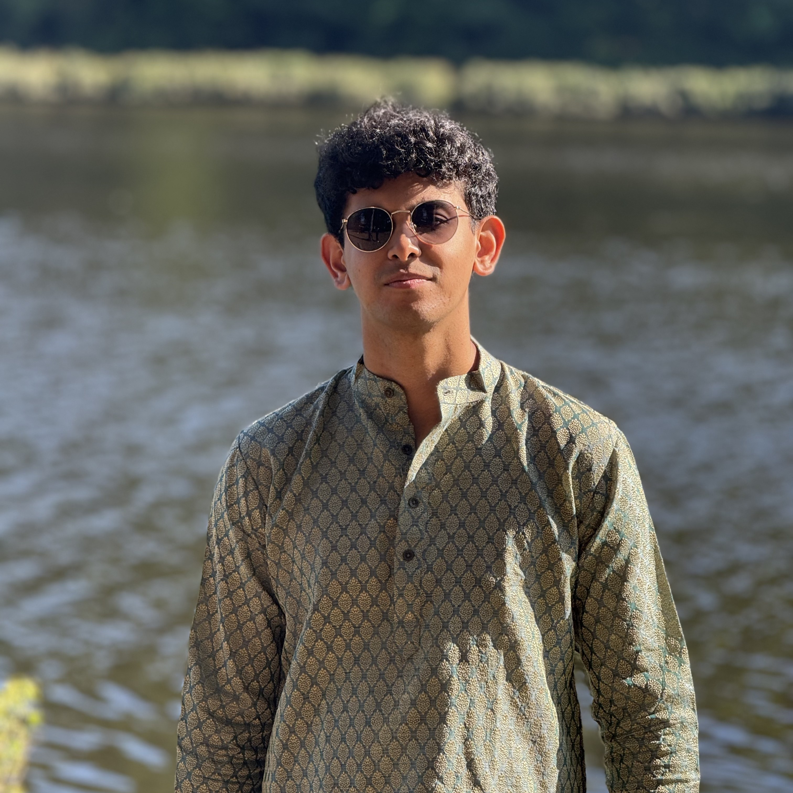
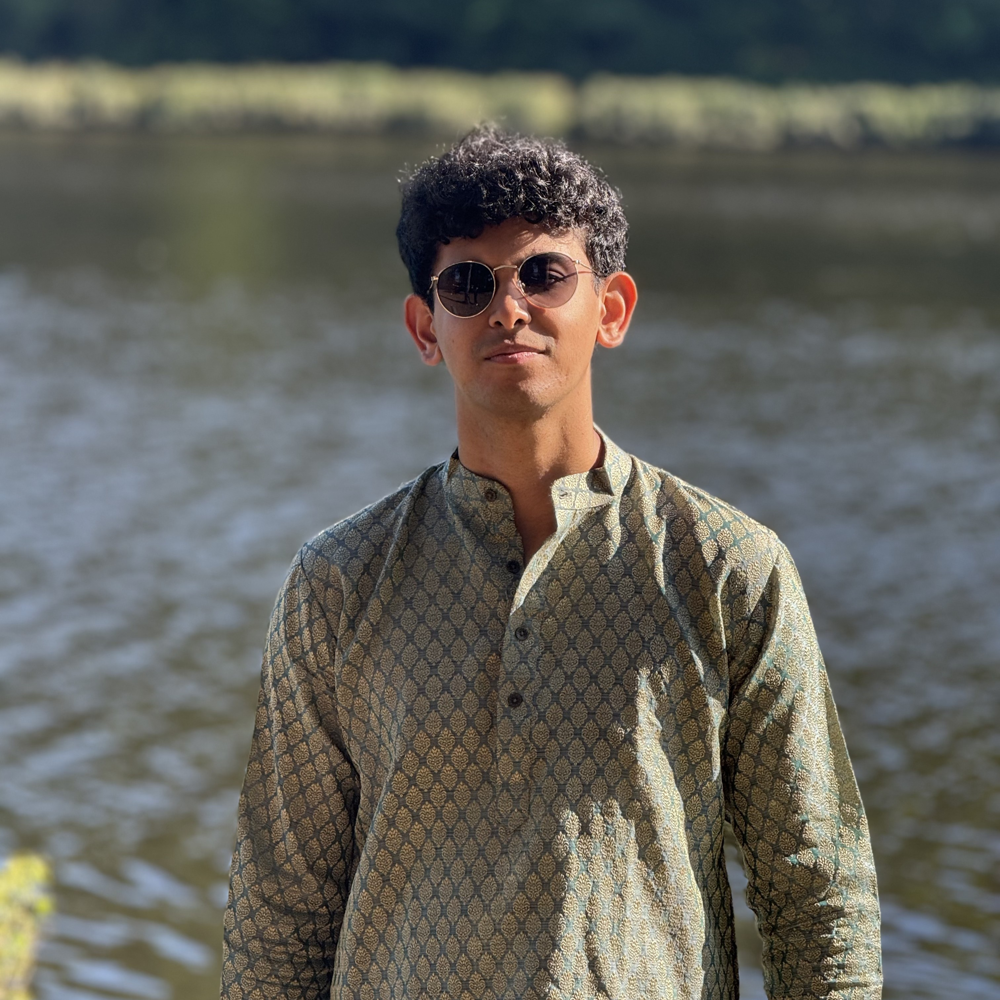

Hello! My name is Shresth, and I am a first year Mechanical Engineering student at Duke University with a strong interest in mechanical design, aerospace systems, materials, and engineering analysis. This website serves as a portfolio of my academic, technical, and project-based work.
In the past, I have worked on a ball launcher, a rocket nose cone, and a satellite image analyser. These experiences have allowed me to develop skills in CAD, FEA, prototyping, experimental testing, Python, and many others, while working in collaborative, multidisciplinary environments.
Currently, I am focused on certifying in various disciplines and the spring semester where I am continuing to build both technical depth and problem-solving ability. I am particularly interested in projects that challenge me! Looking ahead, I plan to pursue research, internships, advanced coursework, and certifications with the goal of contributing to engineering efforts that combine rigorous analysis, experimentation, and real-world impact. I see this portfolio as a living record of my growth as an engineer and a place to document the progression of my ideas, skills, and work over time.